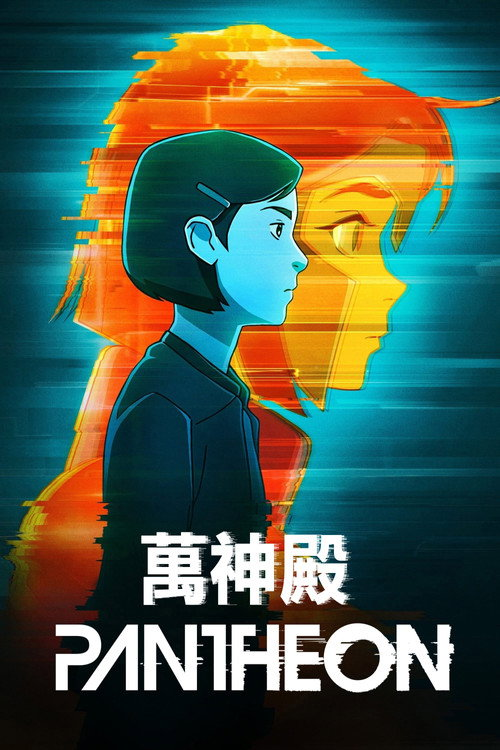
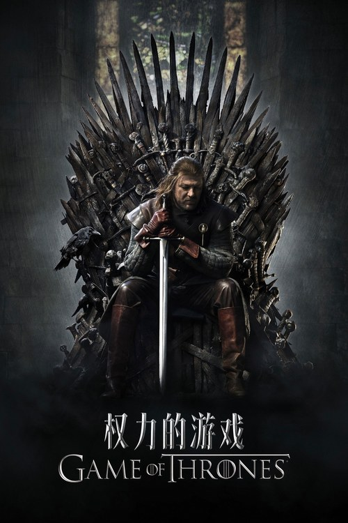

继承之战 Succession · HBO
传媒帝国 Roy 家族的继承权争夺，权力的游戏没有赢家。

万神殿 Pantheon · AMC
意识上传成 AI 之后，人还是人吗？
📝 选择题测验 · 20 道
权利的游戏 Game of Thrones · HBO
七大家族争夺铁王座，凛冬将至。

硅谷 Silicon Valley · HBO
Pied Piper 创业团队的荒诞创业路。

纸牌屋 House of Cards · Netflix
Frank 与 Claire 的夺权之路，一切为了权力。

人生切割术 Severance · Apple TV+
切割手术把人生劈成里外两个人。